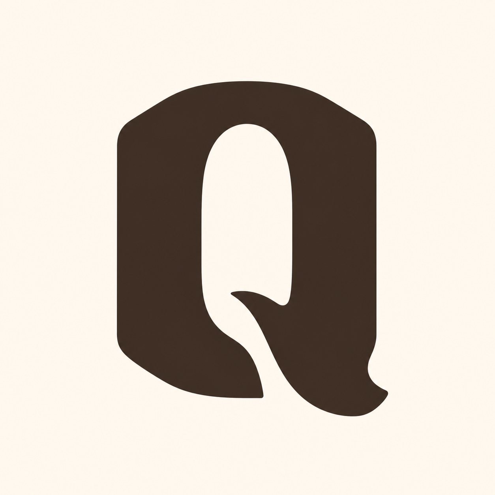
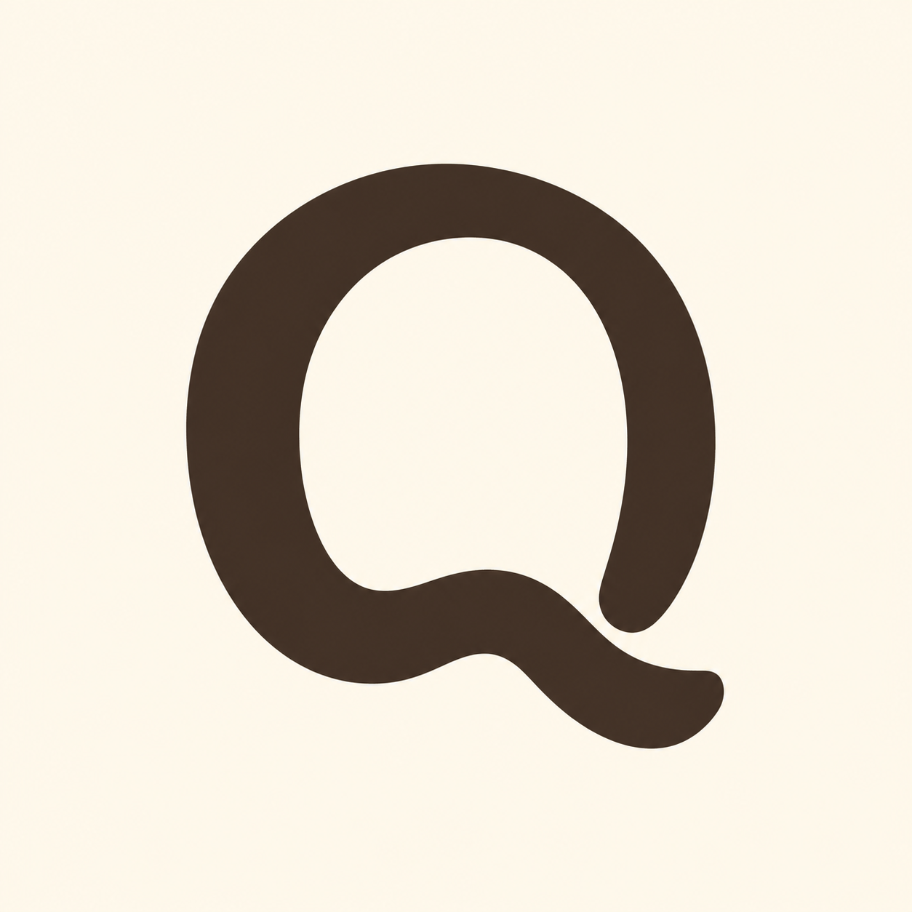

One Q, three new constructions

Architectural, recognizable, not a magnifier
A softened non-circular slab carries the counter and an internal tail in one substantial mass.
Most genuinely new silhouette; low magnifier risk and immediate capital-Q recognition.
Simplify the calligraphic flare at the lower-right and rebalance the counter for a cleaner 16px redraw.
Provider shading and cream variation are source-render drift, not production colors.
Select structure only, then redraw as a flat source-owned SVG rather than tracing provider pixels literally.

Friendly, but too familiar
A broad rounded stroke produces the warmest and most human Q in the round.
Friendly weight, open counter, and fused tail with no detached punctuation.
Reads like a conventional softened typeface Q; moderate-to-high generic-Q risk.
Soft tonal shading and a round-bowl grammar still approach generic handle territory.
Useful warmth reference, weaker as the primary source construction.

Strong junction, corporate weight
A rounded-rectangle bowl and internal crossing slot make the tail order explicit.
Most geometric, strongest small-size construction potential, and clear joined-tail logic.
Long diagonal and rigid mass feel corporate/fintech; the tail can still become a handle at small scale.
Provider shading weakens the intended flat geometry.
Useful construction boundary; less aligned with the desired neighborhood-service tone.